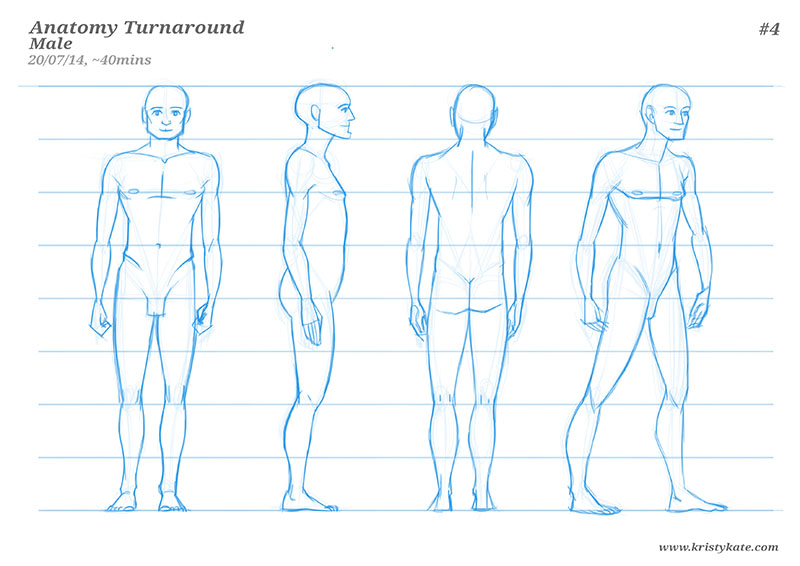
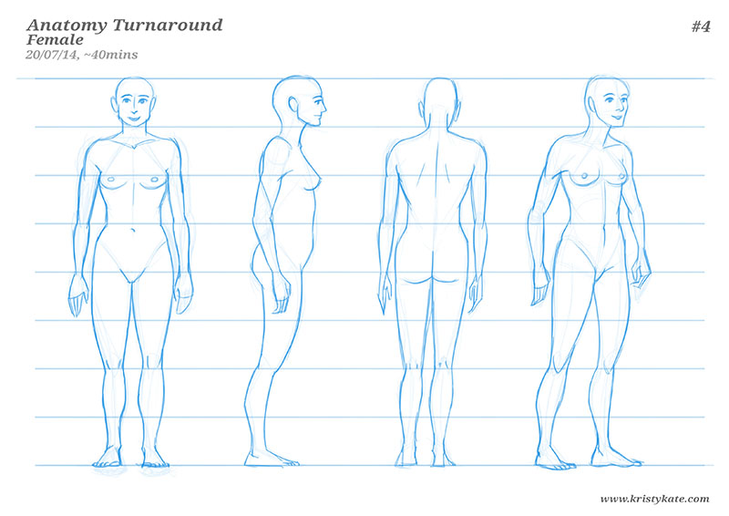
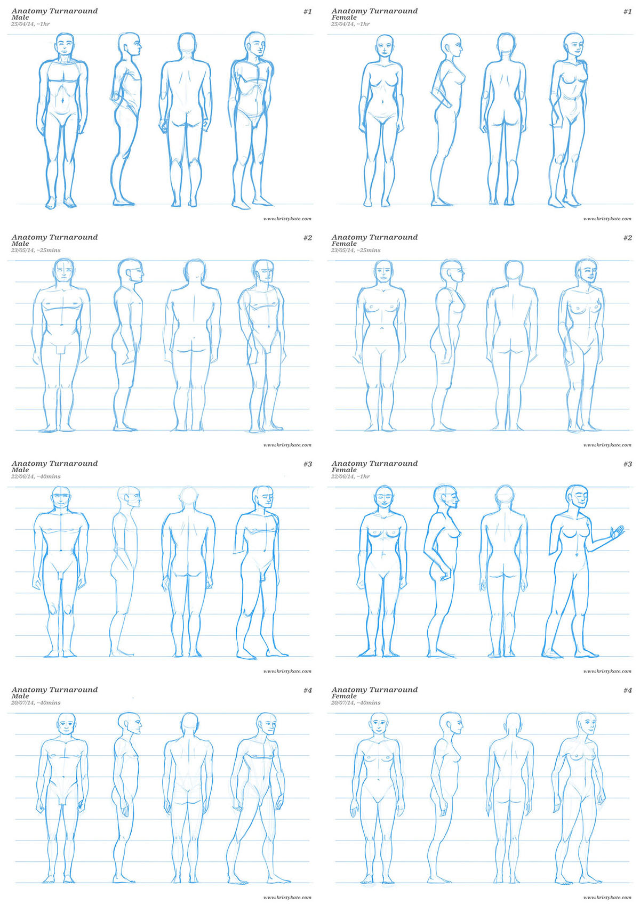

Week 17 Studies
July 14th - 20th
Time for the monthly Anatomy Turnaround!
(For those that are unfamiliar with this exercise; once a month I draw a turnaround sheet of the male and female figure - from imagination - to measure my progress in learning human anatomy).


And for comparison, here's all 4 sets of turnaround sheets that I've completed over the past 3 months:

While I'm still very good at being nit-picky over my current work, gosh it makes me happy to look back at how far I've come in just 3 months of study. Anatomy has always felt like a big scary undertaking, but these pictures show that, if you just keep working at it, progress really is guaranteed.
(I can't wait to look back on this post in 3-6 months and laugh at just how little I know!)
Now that I've made progress with understanding the basics of human anatomy, I feel it's time to start shifting my focus and aim higher.
My next steps towards character design (over the next 6 months):
- Draw lots of figure studies (and push the pose!)
- Complete more muscle studies
- Draw turnarounds (more than once a month) to really cement my understanding of the human figure from different views
- Draw lots of studies of the hands and feet
- Draw lots of faces and study the construction of facial features
- Complete master studies (figurative)
- Study the design of existing characters
- Experiment with and exaggerate the proportions and shapes of figures and faces
- Study, practice, play!
Most importantly, it is time to step out of my comfort zone and
- Start designing human characters!
It's an ambitious list and I haven't quite figured out where this will fit into my current schedule, but I accept the challenge!
Wish me luck!
Until next time,
x Kristy Kate
+ + +
Have any thoughts on my studies? Join me on my creative journey and share your own by leaving a comment (critique welcome) or connecting via Twitter or Facebook.